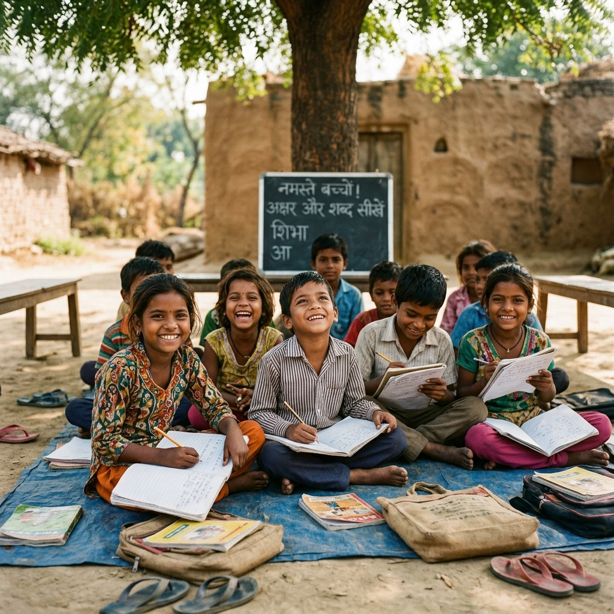
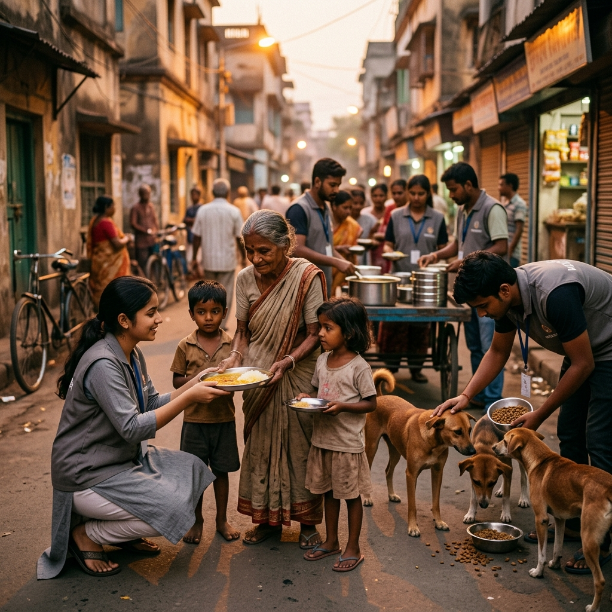
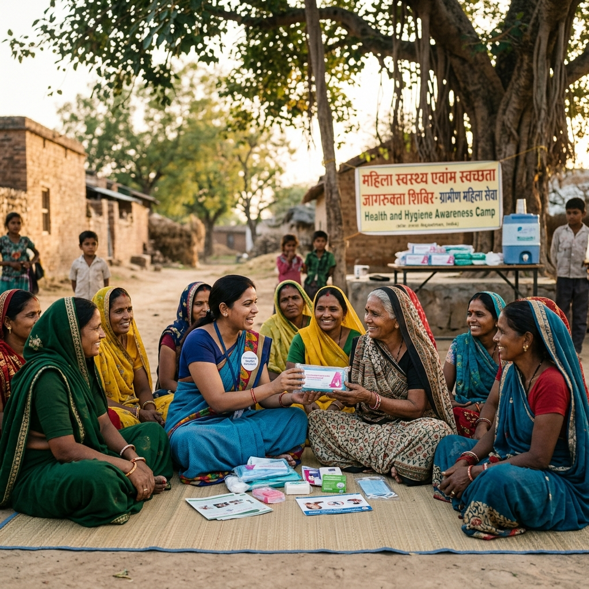

We don't ask for much, just help us with what you can - Be it Money, Skill or Your Time
Donate NowLives Impacted
Volunteers Joined
Multiple Cities Reached
Countless Smiles Created
Founded in March 2021 during the height of the COVID-19 pandemic, NayePankh Foundation is a registered 12A & 80G youth-led NGO in Uttar Pradesh. We exist to build self-reliance and resolve daily issues faced by grassroot and urban poor communities.
Our completely transparent operations run on youth volunteer energy. Over 95% of our resources directly reach the field, empowering street children, rural women, stray animals, and marginalized neighborhoods.
"If we all contribute small actions, there is no community problem that we cannot solve. NayePankh empowers the youth of our country to lead this change and build a new future."
Founder & President, NayePankh Foundation
From daily necessities to systematic education, we operate five structured drives to support and uplift underprivileged lives.

Sponsoring primary schooling books, school bags, bags, notebooks, and running regular tutoring classes for slum kids.
Explore Education Drive →
Conducting regular warm meal drives for daily-wage laborers, slum clusters, and feeding stray dogs/cows on street routes.
Explore Hunger Relief →
Distributing sanitary napkins, fighting menstrual taboos, and organizing village workshops on reproductive health.
Explore Hygiene Campaigns →Collecting, recycling, and distributing quality clothing, blankets, and woolens to street families during extreme winter nights.
Explore Clothing Drive →Providing emergency medical care support, local disaster response packs, and attaching reflective collars to stray dogs.
Explore Community Support →Volunteering with NayePankh Foundation is a journey of personal growth, skill building, and direct social transformation.
Gain hand-on experience managing teams, leading camp logistics, and receive official NGO Certificates and Letters of Recommendation (LOR) to power your career.
Work directly in slum areas, villages, and community modules. See the immediate positive results of distributing food, teaching, or providing hygiene products.
Connect with a passionate community of 10,000+ school and college student volunteers across Uttar Pradesh and other Indian states, building long-term friendships.
Hear from our volunteers and interns about their real experiences driving grassroot change.
"Interning at NayePankh was truly eye-opening. Leading a menstrual hygiene campaign in rural villages taught me team leadership, compassion, and real-world project coordination."
Delhi Chapter Lead
"We are given real autonomy to run collection drives and design coaching classes. The fact that the entire foundation is student-led makes it incredibly responsive and exciting."
Kanpur Volunteer
"Serving warm meals to homeless families and distributing blankets during winter drives showed me how small donations from daily citizens can make a massive impact on the street."
Operations Intern
Your support, whether as a donor or a youth volunteer, gives wings to those who need them most. Join us and write a story of hope for India.
Active Chapters
80G Tax-Exempt